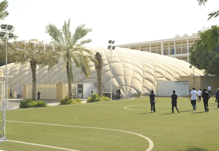

ASK - Setting the standard for American education in Kuwait since 1964.
The American School of Kuwait (ASK) has been established for fifty two years. ASK’s story tells a rich history of perseverance, strong leadership, and the dedication from all members of the organization, past and present, towards the goal of giving our studentsnthe highest standards of American education in Kuwait.

The American School of Kuwait welcomed its first group of students in 1964. Beginning in 1963, a group of American parents selected a Board of Trustees for the purpose of establishing an international school patterned authentically after the American school model. During September 1964, the American School of Kuwait began its first official term under the name of the "International School of Kuwait" in a large villa in the Dasman Area of Sharq. A full program for grades kindergarten through twelfth grade was provided for seventy-five students. These initial students came from several different countries. The school’s original faculty consisted of sixteen full time teachers and three part time teachers.
In 1969, the school moved to a new location in Surra. These improved facilities offered in the Surra campus led to a significant increase in student enrollment. It was at that time that the school changed its name to the "American School of Kuwait" to better reflect its mission and educational philosophy. Subsequently, the high school received its initial U.S. Accreditation from The Middle States Association of Colleges and Secondary Schools in 1971.
Practice Compassion - Make a Difference - Learn for Life
ASK prides itself on offering the best in American curriculum and instruction in the State of Kuwait. The American School of Kuwait has truly come a long way since it was first established. The reason for the school’s success is a testament to its strong governance and dedicated administration and teachers throughout the years who have collectively contributed to the school’s development. The successes and accomplishments achieved by the American School of Kuwait can be seen in the successful graduates that have come from our school on an annual basis.
We have a truly international student and teacher community and that makes us dynamic and unique...and fun! Mrs. Becky Ness, ASK Superintendent